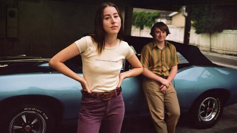
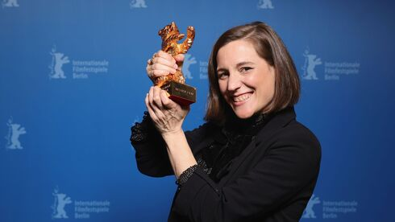

LUZ ENCENDIDA
Críticas
Crítica de “The Worst Person in the World”. Joachim Trier orquesta un vívido coming-of-age adulto

Actualidad
Licorice Pizza de Paul Thomas Anderson
Festivales
Berlinale 2022: la española Carla Simón gana el Oso de Oro
Actualidad
Una posible selección: 50 películas del 2021